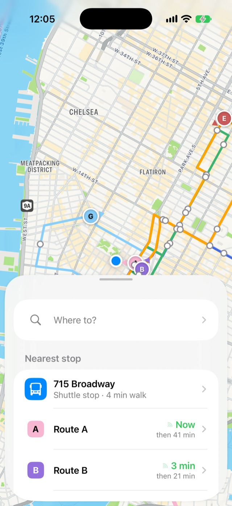
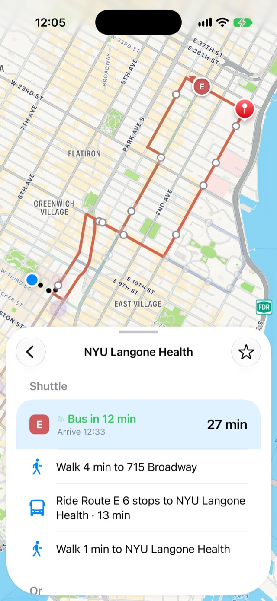

Product Showcase (Prototype / Live App / 2-Min Video)
Current Status: The native iOS app works end to end and runs on my own iPhone. It shows every NYU shuttle moving on Apple Maps, live arrival times at each stop, and a trip planner: search any place and it says whether a shuttle beats walking, using real Apple Maps walking times. A public TestFlight link for classmates is next. Demo:Try the interactive prototype in any browser, or see the first design mockup.

Home: your nearest stop and the next buses, live.

Trip: ride Route E for 6 stops, 27 minutes door to door.
Screenshots of the real app on Nov 16, 2026, from the iPhone simulator with the live Passio GO feed. Bus positions and times are real, taken at midday.
Living PRD (Product Requirements Document)
Updated every week as we test with real users and learn what works. v3 · Nov 22, 2026.
1. Target User & The Job to Be Done
Who is this for? NYU undergrad and grad students who use the free NYU shuttles, especially commuters getting to and from campus. My first testers will be my classmates.
The painful "Before" workflow: Right now students use Passio GO, the app NYU points them to, and it's close to unusable. It won't show how far the next bus is from your stop or give you an arrival time. You also can't enter where you are and where you're headed to get a suggested route. So you guess which shuttle to take, walk to the stop, and wait without knowing how long the wait will be.
The "After" workflow with this product: Open Bussin and it finds your nearest stop, shows the next shuttle on the map, and tells you when it will arrive. Type in where you're going and it tells you which shuttle to take and where to get on. The shuttles are free, and the goal is to make them easy enough that students actually use them.
2. Scope & Explicit Non-Goals
In Scope (Core Workflow): Live shuttle locations, arrival times at your nearest stop, and a suggested shuttle route from where you are to where you're going.
Out of Scope #1: Other schools. Passio GO serves many universities, but Bussin covers NYU routes only.
Out of Scope #2: Mobile student ID or wallet. If you lose your ID card, Bussin can't stand in for it.
Out of Scope #3: General navigation. Walking directions, the subway, and anything off the shuttle network stay with Google Maps or Apple Maps.
Future Features
Ideas worth building after the core workflow works. Not part of the six-week scope.
Service alerts and updates: tell riders when a shuttle is down or off schedule. That covers delays, detours and suspensions, plus planned changes like holidays and breaks when some routes don't run at all. Alerts would show on the home screen and in trip plans, suggest the next best way to get there, and could arrive as a notification the day before a holiday schedule starts. This needs a source for alerts. That could be Passio's feed, if it carries them, or NYU Transportation's announcements and academic calendar.
Alternate app icons: a retro "station lamp" icon (a white globe over glowing green, like the old subway entrance lamps) that people can switch to in Settings. iOS supports alternate icons, so this is a small addition once the main icon ships.
Report a problem to Campus Safety: a button on the bus screen that contacts NYU's Department of Campus Safety when something goes wrong on a shuttle. Since Bussin knows which bus you're riding, the report could include the bus number, route and location, so nobody has to describe where they are while things are happening. It would add to 911, never replace it. Before building it I'd need to ask Campus Safety how they want to receive reports, since they may prefer a call to an in-app message.
Ride mode (crowdsourced positions): a rider who taps "I'm on this bus" can opt in to sharing GPS while aboard. One participating rider gives every other user second-by-second positions for that bus instead of the feed's slower pings — the Waze trick, scaled down to a campus where it only takes one person per bus. Add one-tap reports ("bus never came," "too full to board") and riders become a second data source alongside the official feed. Opt-in, anonymous, and no points or badges for participating.
Smarter arrival times: today's ETAs divide remaining route distance by observed bus speed. Two upgrades, in order: blend in Apple's live traffic estimates for the same stretch of road (free via MapKit), then train a model on our own logged history — weeks of "Route A, Monday 9 a.m., this segment took 6.5 minutes" from the ridership collector and the app's own polling. The second one is a real machine-learning project and needs the data history to exist first, which is one more reason logging starts now.
"Time to leave" notifications: if the app knows your usual route and how long the walk to your stop takes, it can tell you when to leave your apartment. The first version learns your pattern on the phone (your home location never leaves the device) and schedules reminders from typical bus timings. The full version checks the live feed at the moment of the notification — "leave now, the A is 9 minutes out" — which requires a small server watching the feed, so it comes after the class version ships. Builds directly on ride history, the trip planner's walking times, and the ridership log.
3. How It Works Under the Hood & Riskiest Assumption (Week 2+)
Riskiest assumption: That Bussin can grow into something that earns money, or that NYU adopts, without Passio or NYU shutting it down. There are two ways that fails.
My access gets blocked. On Nov 8 I confirmed that Passio GO's feed hands out NYU's routes, stops, and live bus positions with no login. I have not confirmed that Passio or NYU allows a third-party app to use it. A free student project can slide by unnoticed. An app that charges for anything is the likeliest thing to make them act. If the feed gets blocked or locked behind a key, Bussin shows no buses, and the buses are the whole product.
NYU never switches to my app. Passio's tracking hardware is installed on the shuttles, so NYU's bus data is tied to Passio. Bussin can't replace that, because it has no other source of bus positions. So even the best outcome, NYU pointing students to Bussin, means NYU asking Passio to allow it, and Passio has no reason to say yes to an app that competes with its own.
Success also adds a technical risk. Every phone with the app open asks Passio for bus positions every four seconds, so 100 riders at once is about 25 requests a second landing on a service I don't pay for.
How this build tests it: Code can't prove permission or win over NYU, so the build measures three things and leaves the fourth to a person.
Does the feed stay open? The ridership collector has called it 24 times since Nov 10 and every call succeeded. My phone and the simulator have polled it every four seconds throughout the build with no blocking. That is one location and one user, so it shows the feed is open today, not that it stays open under load. Failing would look like a blocked response or an empty feed during hours the shuttles run. One more limit: GitHub runs the collector about four times a day instead of every 15 minutes, so 24 samples is what I have, not hundreds. I need a more reliable trigger before I lean on this evidence.
What does a rider see if the feed goes away? The app tells them "Can't reach live bus data" and keeps showing the last buses it saw instead of an empty map. Automated tests cover that logic. I have never seen a real block, so the logic is checked but the experience is not.
What do real riders run into? When my classmates install it through TestFlight, PostHog will show how many open the app and how many sessions hit the "Can't reach" notice. The app sends a feed_unreachable event when a rider hits that notice, and my PostHog dashboard counts it. Failing would look like the notice showing up in more than a handful of sessions.
Ask. Only NYU Transportation and Passio can settle this. I need three answers: may a third-party app use the feed, does that change if the app charges, and would NYU point students to Bussin. I haven't emailed them yet (as of Nov 22). I'll send it before Build 4 and log the date and their answer here. If the answer is no, only the data layer (PassioAPI in the app) has to change, and the screens, arrival math, and trip planner carry over. The catch is that no other source matches Passio's hardware. The nearest alternative is "ride mode" under Future Features, where riders share their own GPS, and that is a long way from a replacement.
How the app works: A rider's location or chosen stop, plus a destination → Bussin iOS app (SwiftUI) → Passio GO feed for bus positions, routes, and stops, and Apple Maps for place search and walking routes → live arrival times and a ride-or-walk answer on the map.
Where each bus is. Every four seconds the app reads each bus's position and snaps it onto its route line. Speed is averaged over about two minutes of driving so a red light doesn't swing every estimate, and a reading more than 300 meters off the route gets dropped. (One Route B bus once reported it was in New Hampshire.) On screen, each bus slides to its new spot instead of jumping.
When it arrives. The distance left along the route to your stop, divided by that bus's average speed. Loops wrap around, and a bus that just passed your stop correctly shows a long wait.
Ride or walk. Type any address or place and Apple Maps finds it. For each running route the app picks the stops that give the shortest total trip, then asks Apple Maps for the real walking times to and from those stops (at most 9 requests per trip) and compares the result with walking the whole way. If walking wins, it says so.
What stays on the phone. Favorites and recent places. Usage counts go to PostHog as named events such as trip_planned, which records the route and the two stops. They never include a place name, an address, or coordinates.
Go mode. After you tap Go, the app checks your location and the buses every 2 seconds. It decides you're aboard once you've been beside a bus for two readings after it pulls away, counts the stops, and buzzes one stop before yours. Location runs in the background only during a Go trip, which ends on its own if you never board or walk off and forget it.
How I know it works. 79 automated tests cover the feed parsing, the arrival math, the trip planner, Go's step-by-step trip logic, and the notices. The screens I check in the simulator and on my own phone.
Hosting, Data & Security (v3)
Hosting. This page and the prototype are static files on GitHub Pages, published from main. The iPhone app goes out through TestFlight's public link. Every change goes through a branch and a pull request, and merging to main is the deploy. Rolling back means reverting the commit, or expiring a bad TestFlight build so testers stay on the last good one.
Database: none, on purpose. Bussin has no accounts and no server. Favorites and recent searches are stored on the phone. That leaves no user data for me to leak and no database to secure or back up. The cost is that favorites don't follow you to a new phone.
Keys. The only key is PostHog's phc_ project key, which is public by design and can only send events. In the app it comes from a gitignored file, and it was never committed. The Passio feed and Apple Maps need no key.
Location. Location is used only while the app is on screen, plus during a Go trip, with iOS's blue pill showing. It never leaves the phone, and analytics never include places.
Audit. The full Build 3 audit is in SECURITY.md. The biggest open risk is still permission to use Passio's feed, not a technical hole.
4. Unit Economics & Analytics Snapshot (Updated Weekly)
Cumulative Build Spend
$99 Apple Developer Program, plus my Claude subscription
Est. Cost Per User Run
$0.00 marginal, about $0.008 with the Apple fee spread out
User Evidence (as of Build 3)
The beta has been public since Nov 19. TestFlight shows 1 install of build 2 (11 sessions), which I believe is my own phone. Outside testers start with my pod on Nov 24.
Sponsor Call (Week 6)
TBD
How I got the cost number. A run is one rider opening the app, checking a stop, and planning one trip, about five minutes. Here is what each run uses:
Passio feed: about 75 bus-position requests at four seconds apart. I measured one at 3.3 KB on Nov 16, so roughly 250 KB per run, plus the route and stop list on open (157 KB). It costs me nothing.
Apple Maps: one place search and up to 9 walking routes. MapKit has no per-request fee. Apple limits an app to about 50 directions requests a minute instead of billing for them.
PostHog: about 8 events per run. Their free plan, which I understand covers 1 million events a month (I should confirm on their pricing page), would stretch to around 100,000 runs a month.
Ridership collector: GitHub Actions on a public repo, which is free.
AI at runtime: none. The app makes no AI calls, so cost doesn't climb as people use it.
The one fixed cost is the $99 a year Apple Developer Program, or $8.25 a month. At 1,000 runs a month that is about $0.008 per run, and it falls as use grows. What does grow with use is the load on Passio: the 25 requests a second from 100 simultaneous riders. If that becomes a problem, I would put a small relay of my own between the phones and Passio, asking Passio once every four seconds and answering every phone from that. I haven't priced it.
Weekly Build Log
Build on at least two separate days each week outside class, including the November 3 break. Push commits and log actual progress, failures, PRD changes, costs, and hours here. All build deadlines are noon, New York time.
Build 1 · Intent.md & Throwaway Prototype (Due Nov 9)
What shipped: PRD v1 and a clickable home screen mockup styled after Apple Maps. It draws NYU's real shuttle routes and stops, pulled from Passio GO's public feed, on top of an OpenStreetMap street map. Bus positions and arrival times are still simulated.
Things learned with AI: Terminus Episodes 1 and 2 taught me how to get around in the terminal. I'd never bothered learning terminal commands before, and now I can see where they'd save me time. I've worked with AI coding agents before, so nothing new to report there yet.
What broke / changed in PRD: I want Bussin in the App Store as a native iOS app, which means Xcode, and Xcode wasn't on my Mac. So this week's prototype is an HTML mockup, and the SwiftUI build waits on a macOS update and the Xcode install. The bigger surprise: Passio GO's live bus feed for NYU answers without a login. That changed the riskiest assumption from "can I get the data?" to "am I allowed to use it?" I was also surprised by how good the UI looked on the first pass.
Cost & time this week: $0.00 beyond my Claude subscription · 4 hours
Build 2 · Smallest Local Version & PostHog (Due Nov 16)
What shipped: Bussin is now a native iPhone app, and it runs on my own phone. It reads the live Passio GO feed, draws every NYU shuttle moving on Apple Maps, and works out arrival times at each stop. You can search any address or restaurant, and it says whether a shuttle beats walking, using real Apple Maps walking times. Favorites and recent places sit on the home screen. A welcome card explains the app the first time it opens, and the home screen says so when no shuttles are running, the live data can't be reached, or location is off. 44 automated tests cover the feed parsing, the arrival math, the trip planner, and those notices. Separately, a GitHub Action logs riders aboard each bus, PRD v2 is published with a privacy page, and TestFlight prep is done: version number, privacy manifest, app icon. The upload itself waits on registering the app in App Store Connect.
PostHog: It is set up on the product page (pageviews, click tracking, session replay) and in the app, which sends named events such as app_opened, search_opened, and trip_planned. The app never sends a place name, an address, or coordinates. PostHog shows events from the app since Nov 12 and 3 pageviews on the page. It does not yet show a click on "See the Product" or a usable session recording, most likely because my ad blocker keeps PostHog from loading when I visit. [Fill in: screenshots of the pageview, click, and recording after a test visit with the blocker off.]
Commits: On five different days: Nov 10, 11, 12, 13, and 16.
What broke / changed in PRD: Real buses exposed bugs that tests had missed. One Route B bus reported it was in New Hampshire mid-service, so the app now ignores any GPS reading more than 300 meters off its route. A bus sitting at a red light threw every arrival time off by up to nine minutes, so speed now averages over about two minutes. Late at night, right after the only Route A bus left, a trip to Tandon said the shuttles don't go there, and a bus waiting at your stop counted as missed. Both are fixed. After I installed it on my phone, tapping a favorite did nothing: a tap handler I had added for analytics was swallowing the tap. My first attempt at smoother bus movement used 30% of the processor, so I replaced it. The ridership collector turned out to run about four times a day instead of every 15 minutes, because GitHub slows scheduled jobs on quiet repos. That is 24 samples in six days, too thin to claim anything by hour, and I haven't fixed it yet. The PRD's biggest risk changed: it is now that monetizing or growing gets my access blocked, or that NYU can't switch to Bussin because Passio's hardware is on the buses.
Lessons: Every serious bug appeared only against live data, so I should test with real buses earlier. A feature can pass 43 tests and still be dead, as the favorites tap was, so tapping through every screen by hand has to stay on my checklist. The collector looked healthy because every run succeeded until I counted how many runs there were. And the hardest problem is not code. It is whether Passio and NYU will let Bussin exist.
Cost & time this week: $99 for the Apple Developer Program, plus my Claude subscription. Running the app costs $0.00 per run: it makes no AI calls, and the feed, Apple Maps, the collector, and PostHog's free plan cost me nothing (details in PRD section 4). About 7 hours: roughly 6 working with Claude, counted from my chat timestamps with breaks over 20 minutes left out, plus 1 hour I'm estimating for work outside the chat.
Build 3 · Go Live & Security Audit (Due Nov 23)
What shipped: Bussin is live. Anyone with an iPhone can install it from the public TestFlight link or the "Try the beta" button at the top of this page. Apple approved build 2 on Nov 19 and build 3 on Nov 22. The biggest new feature is Go: pick a shuttle, tap Go, and the app follows your trip. It shows when you're aboard, counts down the stops, and buzzes with a lock screen card one stop before yours, with the phone in your pocket. Trip planning grew too. You can start from somewhere other than where you're standing, ask to arrive by a set time, and see every bus due at a stop in the next hour. On long walks the planner now offers a shuttle even when it's a few minutes slower, because in the cold some people would rather ride. Bus arrows now follow the road instead of Passio's heading, which pointed the wrong way 12 times out of 14. The app opens in dark mode with a Light switch, and the panel uses Apple's new Liquid Glass look. 79 automated tests pass, up from 44.
Hosting, data & security: The product page is on GitHub Pages and publishes from main. The app ships through TestFlight. There's no server and no database: favorites stay on the phone, and the app reads Passio's public feed directly. The security audit is in SECURITY.md. The secret-key search came back clean on the repo, its history, and the live site. The audit's one real fix: location used to keep running after you left the app, and now it stops unless a Go trip is running.
PostHog: Still on this page with session replay. The app now also sends trip_started and trip_ended for Go, trip_origin_changed, arrive_by_toggled, and upcoming_buses_opened, and this page sends clicked_try_beta. As before, no event carries a place name, an address, or coordinates.
Commits: On three different days outside class: Nov 17, 19, and 22.
What broke / changed in PRD: The first TestFlight upload failed because Apple wants the app registered in App Store Connect before it accepts a build, and my bundle ID didn't show in the dropdown until I registered it at developer.apple.com. Then Apple said the name "Bussin" was already taken. I chose "Bussin Transit" over "Bussin Shuttles", because "Shuttles" would box the app in if it ever covers other routes, and I left NYU out of the name because it's their trademark. The label under the icon on a phone is still "Bussin". I also made my first testing group an internal one, which can't have a public link and skips Apple's beta review, so I made an external group and submitted the build to Apple for review. On Nov 19, every address I typed in said to walk. Only a couple of buses were out, so the shuttle came out a minute or two slower and the app hid it. That's why slower shuttles now show on long walks. Build 2's upload failed three times with "App Store Connect access is required", because my Xcode sign-in had lapsed. Once Apple approved it, my own public link said "This beta isn't accepting any new testers." "Approved" only means Apple is done; I still had to press Notify Testers. My coding agent also tried to merge a pull request I hadn't approved, bundled into the same command as other work. Claude Code's auto mode blocked it, and AGENTS.md now has a rule against it. PRD v3 adds a hosting, data, and security section, and the ride-or-walk rule changed to allow slower shuttles. The goal is unchanged.
What I learned: Live data keeps beating my assumptions. The bus arrows and the "always walk" answer both looked right in tests and wrong on the street. In TestFlight, "Approved" doesn't mean testers can install it. No test caught the location bug, because nothing was broken: the app worked, it just kept using location after you left. A review that asked "what does this do when you're not looking at it?" found it. And the guardrails in AGENTS.md earned their keep the first time the agent tried to skip one.
Cost & time this week: $0.00 beyond my Claude subscription. TestFlight, GitHub Pages, and PostHog's free plan cost nothing, and the $99 Apple fee was last week. About 8 hours: roughly 7 working with Claude (Nov 16 after the Build 2 deadline through Nov 22), counted from my chat timestamps with breaks over 20 minutes left out, plus 1 hour I'm estimating for work outside the chat.
Build 4 · Test.py: Choose Track A or Track B (Due Nov 30)
Chosen track: [A: 10-case domain eval and one outside target-user review; OR B: 3–5 outside users and replay findings]
Results and improvements: [Before/after evidence; for Track B, fixes to the top three friction points]
PRD v4 changes: [What the evidence changed]
Cost & time this week: $[0.00] · [0] hours
Build 5 · Ship.installer: Launch Ops, Rollback Check & 2-Min Video (Due Dec 7)
Launch Ops & Safety: [Verified no exposed keys, set spend cap, tested 2-minute rollback]